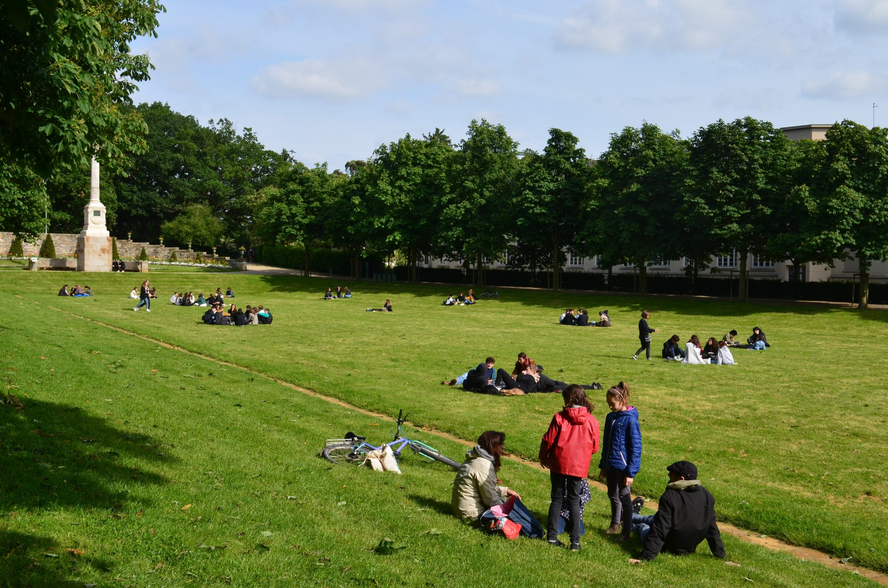

Le carré Du Guesclin fut aménagé en 1825.
Il s’agit d’une pelouse de forme trapézoïdale avec une promenade bordée d’une allée de marronniers,
régulièrement replantée pour des conditions de sécurité (chutes d’arbres) et esthétiques (uniformité des
allées).
Sur le petit côté, un arc en pierre mettant en valeur une colonne de Juillet permet de surplomber le
boulingrin.
De cet observatoire, l’observateur a l’impression que le carré du Guesclin est de forme parallélépipédique.
Une colonne de Juillet, réalisée par Jean-Baptiste Barré, est élevée en 1835 à la mémoire de deux rennais,
Louis
Vaneau, polytechnicien, et Papu, chirurgien et fils d’un dentiste, morts à Paris en 1830 lors des Trois
Glorieuses. La colonne Vanneau-Papu doit son érection au poète Hippolyte Lucas qui se chargea d’émouvoir la
population sur le sort des deux rennais.
Ce monument est constitué d’un socle ainsi que d’une colonne surmontée d’une petite statue représentant la
Liberté.
Enfin depuis 2016 la grande et belle pelouse du Carré Du Guesclin a enfin été autorisée au public. C’était
un
peu l’énigme du parc du Thabor.
En effet avec plus d’un million et demi de visiteurs par an, pour protéger la pelouse, la municipalité avait
depuis longtemps interdit l’accès à cet espace pourtant tentant.
Ici, seuls quelques événements comme Mythos ou Le Grand Soufflet pouvaient installer leur chapiteau. Mais la
municipalité a fini par céder, face à l’augmentation de la fréquentation des espaces verts, une nouvelle qui
avait fortement enchanté les habitants de la ville de Rennes.
